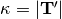

tracking¶
Tracking objects
bench |
Run benchmarks for module using nose. |
test |
Run tests for module using nose. |
Module: tracking.benchmarks¶
Module: tracking.benchmarks.bench_streamline¶
Benchmarks for functions related to streamline
Run all benchmarks with:
import dipy.tracking as dipytracking
dipytracking.bench()
If you have doctests enabled by default in nose (with a noserc file or environment variable), and you have a numpy version <= 1.6.1, this will also run the doctests, let’s hope they pass.
Run this benchmark with:
nosetests -s –match ‘(?:^|[b_.//-])[Bb]ench’ /path/to/bench_streamline.py
bench_compress_streamlines |
|
bench_length() |
|
bench_set_number_of_points() |
|
compress_streamlines |
|
compress_streamlines_python |
|
get_data |
|
length |
Euclidean length of streamlines |
length_python(xyz[, along]) |
|
measure(code_str[, times, label]) |
Return elapsed time for executing code in the namespace of the caller. |
set_number_of_points |
Change the number of points of streamlines |
set_number_of_points_python(xyz[, n_pols]) |
Module: tracking.eudx¶
EuDX(a, ind, seeds, odf_vertices[, a_low, ...]) |
Euler Delta Crossings | ||
eudx_both_directions |
|
||
get_sphere([name]) |
provide triangulated spheres |
Module: tracking.learning¶
Learning algorithms for tractography
detect_corresponding_tracks(indices, ...) |
Detect corresponding tracks from list tracks1 to list tracks2 |
detect_corresponding_tracks_plus(indices, ...) |
Detect corresponding tracks from 1 to 2 where tracks1 & tracks2 are sequences of tracks |
Module: tracking.life¶
FiberFit |
|
FiberModel |
|
LifeSignalMaker |
|
ReconstFit |
|
ReconstModel |
|
range |
|
grad_tensor |
|
gradient |
|
streamline_gradients |
|
streamline_signal |
|
streamline_tensors |
|
transform_streamlines |
|
unique_rows |
|
voxel2streamline |
Module: tracking.local¶
ActTissueClassifier |
|
BinaryTissueClassifier |
|
DirectionGetter |
Methods |
LocalTracking(direction_getter, ...[, ...]) |
A streamline generator for local tracking methods |
ThresholdTissueClassifier |
# Declarations from tissue_classifier.pxd bellow |
TissueClassifier |
Methods |
Module: tracking.local.localtracking¶
Bunch |
|
LocalTracking(direction_getter, ...[, ...]) |
A streamline generator for local tracking methods |
local_tracker |
Tracks one direction from a seed. |
Module: tracking.markov¶
Implemention of various Tractography methods
these tools are meant to be paired with diffusion reconstruction methods from dipy.reconst
This module uses the trackvis coordinate system, for more information about this coordinate system please see dipy.tracking.utils The following modules also use this coordinate system: dipy.tracking.utils dipy.tracking.integration dipy.reconst.interpolate
BoundaryStepper([voxel_size, overstep]) |
Steps along a direction past the closest voxel boundary |
CDT_NNO(model, interpolator, mask, ...[, ...]) |
ClosestDirectionTracker optimized for NearestNeighbor interpolator |
ClosestDirectionTracker(model, interpolator, ...) |
|
DirectionFinder |
Methods |
FixedSizeStepper([step_size]) |
A stepper that uses a fixed step size |
MarkovIntegrator(model, interpolator, mask, ...) |
An abstract class for fiber-tracking |
NearestNeighborInterpolator(data, voxel_size) |
Interpolates data using nearest neighbor interpolation |
OutsideImage |
|
ProbabilisticOdfWeightedTracker(model, ...) |
A stochastic (probabilistic) fiber tracking method |
xrange |
xrange(start, stop[, step]) -> xrange object |
markov_streamline(get_direction, take_step, ...) |
Creates a streamline from seed |
peak_directions(odf, sphere[, ...]) |
Get the directions of odf peaks |
Module: tracking.metrics¶
Metrics for tracks, where tracks are arrays of points
xrange |
xrange(start, stop[, step]) -> xrange object | ||
arbitrarypoint(xyz, distance) |
Select an arbitrary point along distance on the track (curve) | ||
bytes(xyz) |
Size of track in bytes. | ||
center_of_mass(xyz) |
Center of mass of streamline | ||
downsample(xyz[, n_pols]) |
downsample for a specific number of points along the curve/track | ||
endpoint(xyz) |
|
||
frenet_serret(xyz) |
Frenet-Serret Space Curve Invariants | ||
generate_combinations(items, n) |
Combine sets of size n from items | ||
inside_sphere(xyz, center, radius) |
If any point of the track is inside a sphere of a specified center and radius return True otherwise False. | ||
inside_sphere_points(xyz, center, radius) |
If a track intersects with a sphere of a specified center and radius return the points that are inside the sphere otherwise False. | ||
intersect_sphere(xyz, center, radius) |
If any segment of the track is intersecting with a sphere of | ||
length(xyz[, along]) |
Euclidean length of track line | ||
longest_track_bundle(bundle[, sort]) |
Return longest track or length sorted track indices in bundle | ||
magn(xyz[, n]) |
magnitude of vector | ||
mean_curvature(xyz) |
Calculates the mean curvature of a curve | ||
mean_orientation(xyz) |
Calculates the mean orientation of a curve | ||
midpoint(xyz) |
Midpoint of track | ||
midpoint2point(xyz, p) |
Calculate distance from midpoint of a curve to arbitrary point p | ||
principal_components(xyz) |
We use PCA to calculate the 3 principal directions for a track | ||
splev(x, tck[, der, ext]) |
Evaluate a B-spline or its derivatives. | ||
spline(xyz[, s, k, nest]) |
Generate B-splines as documented in | ||
splprep(x[, w, u, ub, ue, k, task, s, t, ...]) |
Find the B-spline representation of an N-dimensional curve. | ||
startpoint(xyz) |
First point of the track | ||
winding(xyz) |
Total turning angle projected. |
Module: tracking.streamline¶
apply_affine(aff, pts) |
Apply affine matrix aff to points pts |
cdist |
|
center_streamlines(streamlines) |
Move streamlines to the origin |
compress_streamlines |
|
deepcopy |
|
dist_to_corner |
|
length |
Euclidean length of streamlines |
orient_by_rois |
|
relist_streamlines(points, offsets) |
Given a representation of a set of streamlines as a large array and an offsets array return the streamlines as a list of shorter arrays. |
select_by_rois |
|
select_random_set_of_streamlines(...) |
Select a random set of streamlines |
set_number_of_points |
Change the number of points of streamlines |
streamline_near_roi |
|
transform_streamlines(streamlines, mat) |
Apply affine transformation to streamlines |
unlist_streamlines(streamlines) |
Return the streamlines not as a list but as an array and an offset |
values_from_volume |
|
warn |
bench¶
-
dipy.tracking.bench(self, label='fast', verbose=1, extra_argv=None)¶ Run benchmarks for module using nose.
Parameters: label : {‘fast’, ‘full’, ‘’, attribute identifier}, optional
Identifies the benchmarks to run. This can be a string to pass to the nosetests executable with the ‘-A’ option, or one of several special values. Special values are: * ‘fast’ - the default - which corresponds to the
nosetests -Aoption of ‘not slow’.
- ‘full’ - fast (as above) and slow benchmarks as in the ‘no -A’ option to nosetests - this is the same as ‘’.
- None or ‘’ - run all tests.
attribute_identifier - string passed directly to nosetests as ‘-A’.
verbose : int, optional
Verbosity value for benchmark outputs, in the range 1-10. Default is 1.
extra_argv : list, optional
List with any extra arguments to pass to nosetests.
Returns: success : bool
Returns True if running the benchmarks works, False if an error occurred.
Notes
Benchmarks are like tests, but have names starting with “bench” instead of “test”, and can be found under the “benchmarks” sub-directory of the module.
Each NumPy module exposes bench in its namespace to run all benchmarks for it.
Examples
>>> success = np.lib.bench() Running benchmarks for numpy.lib ... using 562341 items: unique: 0.11 unique1d: 0.11 ratio: 1.0 nUnique: 56230 == 56230 ... OK
>>> success True
test¶
-
dipy.tracking.test(self, label='fast', verbose=1, extra_argv=None, doctests=False, coverage=False, raise_warnings=None)¶ Run tests for module using nose.
Parameters: label : {‘fast’, ‘full’, ‘’, attribute identifier}, optional
Identifies the tests to run. This can be a string to pass to the nosetests executable with the ‘-A’ option, or one of several special values. Special values are: * ‘fast’ - the default - which corresponds to the
nosetests -Aoption of ‘not slow’.
- ‘full’ - fast (as above) and slow tests as in the ‘no -A’ option to nosetests - this is the same as ‘’.
- None or ‘’ - run all tests.
attribute_identifier - string passed directly to nosetests as ‘-A’.
verbose : int, optional
Verbosity value for test outputs, in the range 1-10. Default is 1.
extra_argv : list, optional
List with any extra arguments to pass to nosetests.
doctests : bool, optional
If True, run doctests in module. Default is False.
coverage : bool, optional
If True, report coverage of NumPy code. Default is False. (This requires the `coverage module:
raise_warnings : str or sequence of warnings, optional
This specifies which warnings to configure as ‘raise’ instead of ‘warn’ during the test execution. Valid strings are:
- “develop” : equals
(DeprecationWarning, RuntimeWarning) - “release” : equals
(), don’t raise on any warnings.
Returns: result : object
Returns the result of running the tests as a
nose.result.TextTestResultobject.Notes
Each NumPy module exposes test in its namespace to run all tests for it. For example, to run all tests for numpy.lib:
>>> np.lib.test()
Examples
>>> result = np.lib.test() Running unit tests for numpy.lib ... Ran 976 tests in 3.933s
OK
>>> result.errors [] >>> result.knownfail []
bench_compress_streamlines¶
compress_streamlines¶
compress_streamlines_python¶
get_data¶
length¶
-
dipy.tracking.benchmarks.bench_streamline.length()¶ Euclidean length of streamlines
This will give length in mm if streamlines are expressed in world coordinates.
Parameters: streamlines : one or a list of array-like shape (N,3)
array representing x,y,z of N points in a streamline
Returns: lengths : scalar or array shape (N,)
scalar representing the length of one streamline, or array representing the lengths of multiple streamlines.
Examples
>>> from dipy.tracking.streamline import length >>> import numpy as np >>> streamline = np.array([[1, 1, 1], [2, 3, 4], [0, 0, 0]]) >>> expected_length = np.sqrt([1+2**2+3**2, 2**2+3**2+4**2]).sum() >>> length(streamline) == expected_length True >>> streamlines = [streamline, np.vstack([streamline, streamline[::-1]])] >>> expected_lengths = [expected_length, 2*expected_length] >>> np.allclose(expected_lengths, [length(streamlines[0]), length(streamlines[1])]) True >>> length([]) 0.0 >>> length(np.array([[1, 2, 3]])) 0.0
measure¶
-
dipy.tracking.benchmarks.bench_streamline.measure(code_str, times=1, label=None)¶ Return elapsed time for executing code in the namespace of the caller.
The supplied code string is compiled with the Python builtin
compile. The precision of the timing is 10 milli-seconds. If the code will execute fast on this timescale, it can be executed many times to get reasonable timing accuracy.Parameters: code_str : str
The code to be timed.
times : int, optional
The number of times the code is executed. Default is 1. The code is only compiled once.
label : str, optional
A label to identify code_str with. This is passed into
compileas the second argument (for run-time error messages).Returns: elapsed : float
Total elapsed time in seconds for executing code_str times times.
Examples
>>> etime = np.testing.measure('for i in range(1000): np.sqrt(i**2)', ... times=times) >>> print "Time for a single execution : ", etime / times, "s" Time for a single execution : 0.005 s
set_number_of_points¶
-
dipy.tracking.benchmarks.bench_streamline.set_number_of_points()¶ - Change the number of points of streamlines
- (either by downsampling or upsampling)
Change the number of points of streamlines in order to obtain nb_points-1 segments of equal length. Points of streamlines will be modified along the curve.
Parameters: streamlines : one or a list of array-like shape (N,3)
array representing x,y,z of N points in a streamline
nb_points : int
integer representing number of points wanted along the curve.
Returns: modified_streamlines : one or a list of array-like shape (nb_points,3)
array representing x,y,z of nb_points points that were interpolated.
Examples
>>> from dipy.tracking.streamline import set_number_of_points >>> import numpy as np >>> # One streamline: a semi-circle >>> theta = np.pi*np.linspace(0, 1, 100) >>> x = np.cos(theta) >>> y = np.sin(theta) >>> z = 0 * x >>> streamline = np.vstack((x, y, z)).T >>> modified_streamline = set_number_of_points(streamline, 3) >>> len(modified_streamline) 3 >>> # Multiple streamlines >>> streamlines = [streamline, streamline[::2]] >>> modified_streamlines = set_number_of_points(streamlines, 10) >>> [len(s) for s in streamlines] [100, 50] >>> [len(s) for s in modified_streamlines] [10, 10]
set_number_of_points_python¶
-
dipy.tracking.benchmarks.bench_streamline.set_number_of_points_python(xyz, n_pols=3)¶
EuDX¶
-
class
dipy.tracking.eudx.EuDX(a, ind, seeds, odf_vertices, a_low=0.0239, step_sz=0.5, ang_thr=60.0, length_thr=0.0, total_weight=0.5, max_points=1000, affine=None)¶ Bases:
objectEuler Delta Crossings
Generates tracks with termination criteria defined by a delta function [R231] and it has similarities with FACT algorithm [R232] and Basser’s method but uses trilinear interpolation.
Can be used with any reconstruction method as DTI, DSI, QBI, GQI which can calculate an orientation distribution function and find the local peaks of that function. For example a single tensor model can give you only one peak a dual tensor model 2 peaks and quantitative anisotropy method as used in GQI can give you 3,4,5 or even more peaks.
The parameters of the delta function are checking thresholds for the direction propagation magnitude and the angle of propagation.
A specific number of seeds is defined randomly and then the tracks are generated for that seed if the delta function returns true.
Trilinear interpolation is being used for defining the weights of the propagation.
Notes
The coordinate system of the tractography is that of native space of image coordinates not native space world coordinates therefore voxel size is always considered as having size (1,1,1). Therefore, the origin is at the center of the center of the first voxel of the volume and all i,j,k coordinates start from the center of the voxel they represent.
References
[R231] (1, 2) Garyfallidis, Towards an accurate brain tractography, PhD thesis, University of Cambridge, 2012. [R232] (1, 2) Mori et al. Three-dimensional tracking of axonal projections in the brain by magnetic resonance imaging. Ann. Neurol. 1999. -
__init__(a, ind, seeds, odf_vertices, a_low=0.0239, step_sz=0.5, ang_thr=60.0, length_thr=0.0, total_weight=0.5, max_points=1000, affine=None)¶ Euler integration with multiple stopping criteria and supporting multiple multiple fibres in crossings [R233].
Parameters: a : array,
Shape (I, J, K, Np), magnitude of the peak of a scalar anisotropic function e.g. QA (quantitative anisotropy) where Np is the number of peaks or a different function of shape (I, J, K) e.g FA or GFA.
ind : array, shape(x, y, z, Np)
indices of orientations of the scalar anisotropic peaks found on the resampling sphere
seeds : int or ndarray
If an int is specified then that number of random seeds is generated in the volume. If an (N, 3) array of points is given, each of the N points is used as a seed. Seed points should be given in the point space of the track (see
affine). The latter is useful when you need to track from specific regions e.g. the white/gray matter interface or a specific ROI e.g. in the corpus callosum.odf_vertices : ndarray, shape (N, 3)
sphere points which define a discrete representation of orientations for the peaks, the same for all voxels. Usually the same sphere is used as an input for a reconstruction algorithm e.g. DSI.
a_low : float, optional
low threshold for QA(typical 0.023) or FA(typical 0.2) or any other anisotropic function
step_sz : float, optional
euler propagation step size
ang_thr : float, optional
if turning angle is bigger than this threshold then tracking stops.
total_weight : float, optional
total weighting threshold
max_points : int, optional
maximum number of points in a track. Used to stop tracks from looping forever.
affine : array (4, 4) optional
An affine mapping from the voxel indices of the input data to the point space of the streamlines. That is if
[x, y, z, 1] == point_space * [i, j, k, 1], then the streamline with point[x, y, z]passes though the center of voxel[i, j, k]. If no point_space is given, the point space will be in voxel coordinates.Returns: generator : obj
By iterating this generator you can obtain all the streamlines.
Notes
This works as an iterator class because otherwise it could fill your entire memory if you generate many tracks. Something very common as you can easily generate millions of tracks if you have many seeds.
References
[R233] (1, 2) E. Garyfallidis (2012), “Towards an accurate brain tractography”, PhD thesis, University of Cambridge, UK. Examples
>>> import nibabel as nib >>> from dipy.reconst.dti import TensorModel, quantize_evecs >>> from dipy.data import get_data, get_sphere >>> from dipy.core.gradients import gradient_table >>> fimg,fbvals,fbvecs = get_data('small_101D') >>> img = nib.load(fimg) >>> affine = img.get_affine() >>> data = img.get_data() >>> gtab = gradient_table(fbvals, fbvecs) >>> model = TensorModel(gtab) >>> ten = model.fit(data) >>> sphere = get_sphere('symmetric724') >>> ind = quantize_evecs(ten.evecs, sphere.vertices) >>> eu = EuDX(a=ten.fa, ind=ind, seeds=100, odf_vertices=sphere.vertices, a_low=.2) >>> tracks = [e for e in eu]
-
eudx_both_directions¶
-
dipy.tracking.eudx.eudx_both_directions()¶ Parameters: seed : array, shape(3,), point where the tracking starts
ref : cnp.npy_intp int, which peak to follow first
qa : array, shape(X,Y,Z,Np), float64, anisotropy matrix,
where Np the number of maximum allowed peaks, found using self.Np :
ind : array, shape(Np,), float64, index of the track orientation
total_weight : double
Returns: track : array, shape(N,3)
get_sphere¶
-
dipy.tracking.eudx.get_sphere(name='symmetric362')¶ provide triangulated spheres
Parameters: name : str
which sphere - one of: * ‘symmetric362’ * ‘symmetric642’ * ‘symmetric724’ * ‘repulsion724’ * ‘repulsion100’
Returns: sphere : a dipy.core.sphere.Sphere class instance
Examples
>>> import numpy as np >>> from dipy.data import get_sphere >>> sphere = get_sphere('symmetric362') >>> verts, faces = sphere.vertices, sphere.faces >>> verts.shape (362, 3) >>> faces.shape (720, 3) >>> verts, faces = get_sphere('not a sphere name') Traceback (most recent call last): ... DataError: No sphere called "not a sphere name"
detect_corresponding_tracks¶
-
dipy.tracking.learning.detect_corresponding_tracks(indices, tracks1, tracks2)¶ Detect corresponding tracks from list tracks1 to list tracks2 where tracks1 & tracks2 are lists of tracks
Parameters: indices : sequence
of indices of tracks1 that are to be detected in tracks2
tracks1 : sequence
of tracks as arrays, shape (N1,3) .. (Nm,3)
tracks2 : sequence
of tracks as arrays, shape (M1,3) .. (Mm,3)
Returns: track2track : array (N,2) where N is len(indices) of int
it shows the correspondance in the following way: the first column is the current index in tracks1 the second column is the corresponding index in tracks2
Notes
To find the corresponding tracks we use mam_distances with ‘avg’ option. Then we calculate the argmin of all the calculated distances and return it for every index. (See 3rd column of arr in the example given below.
Examples
>>> import numpy as np >>> import dipy.tracking.learning as tl >>> A=np.array([[0,0,0],[1,1,1],[2,2,2]]) >>> B=np.array([[1,0,0],[2,0,0],[3,0,0]]) >>> C=np.array([[0,0,-1],[0,0,-2],[0,0,-3]]) >>> bundle1=[A,B,C] >>> bundle2=[B,A] >>> indices=[0,1] >>> arr=tl.detect_corresponding_tracks(indices,bundle1,bundle2)
detect_corresponding_tracks_plus¶
-
dipy.tracking.learning.detect_corresponding_tracks_plus(indices, tracks1, indices2, tracks2)¶ Detect corresponding tracks from 1 to 2 where tracks1 & tracks2 are sequences of tracks
Parameters: indices : sequence
of indices of tracks1 that are to be detected in tracks2
tracks1 : sequence
of tracks as arrays, shape (N1,3) .. (Nm,3)
indices2 : sequence
of indices of tracks2 in the initial brain
tracks2 : sequence
of tracks as arrays, shape (M1,3) .. (Mm,3)
Returns: track2track : array (N,2) where N is len(indices)
of int showing the correspondance in th following way the first colum is the current index of tracks1 the second column is the corresponding index in tracks2
See also
distances.mam_distancesNotes
To find the corresponding tracks we use mam_distances with ‘avg’ option. Then we calculate the argmin of all the calculated distances and return it for every index. (See 3rd column of arr in the example given below.
Examples
>>> import numpy as np >>> import dipy.tracking.learning as tl >>> A=np.array([[0,0,0],[1,1,1],[2,2,2]]) >>> B=np.array([[1,0,0],[2,0,0],[3,0,0]]) >>> C=np.array([[0,0,-1],[0,0,-2],[0,0,-3]]) >>> bundle1=[A,B,C] >>> bundle2=[B,A] >>> indices=[0,1] >>> indices2=indices >>> arr=tl.detect_corresponding_tracks_plus(indices,bundle1,indices2,bundle2)
FiberFit¶
FiberModel¶
LifeSignalMaker¶
ReconstFit¶
ReconstModel¶
range¶
grad_tensor¶
gradient¶
streamline_gradients¶
streamline_signal¶
streamline_tensors¶
transform_streamlines¶
unique_rows¶
voxel2streamline¶
ActTissueClassifier¶
BinaryTissueClassifier¶
DirectionGetter¶
-
class
dipy.tracking.local.DirectionGetter¶ Bases:
objectMethods
get_directioninitial_direction-
__init__()¶ x.__init__(...) initializes x; see help(type(x)) for signature
-
get_direction()¶
-
initial_direction()¶
-
LocalTracking¶
-
class
dipy.tracking.local.LocalTracking(direction_getter, tissue_classifier, seeds, affine, step_size, max_cross=None, maxlen=500, fixedstep=True)¶ Bases:
objectA streamline generator for local tracking methods
-
__init__(direction_getter, tissue_classifier, seeds, affine, step_size, max_cross=None, maxlen=500, fixedstep=True)¶ Creates streamlines by using local fiber-tracking.
Parameters: direction_getter : instance of DirectionGetter
Used to get directions for fiber tracking.
tissue_classifier : instance of TissueClassifier
Identifies endpoints and invalid points to inform tracking.
seeds : array (N, 3)
Points to seed the tracking. Seed points should be given in point space of the track (see
affine).affine : array (4, 4)
Coordinate space for the streamline point with respect to voxel indices of input data. This affine can contain scaling, rotational, and translational components but should not contain any shearing. An identity matrix can be used to generate streamlines in “voxel coordinates” as long as isotropic voxels were used to acquire the data.
step_size : float
Step size used for tracking.
max_cross : int or None
The maximum number of direction to track from each seed in crossing voxels. By default all initial directions are tracked.
maxlen : int
Maximum number of steps to track from seed. Used to prevent infinite loops.
-
ThresholdTissueClassifier¶
-
class
dipy.tracking.local.ThresholdTissueClassifier¶ Bases:
dipy.tracking.local.tissue_classifier.TissueClassifier# Declarations from tissue_classifier.pxd bellow cdef:
double threshold, interp_out_double[1] double[:] interp_out_view = interp_out_view double[:, :, :] metric_mapMethods
check_point-
__init__()¶ x.__init__(...) initializes x; see help(type(x)) for signature
-
check_point()¶
-
TissueClassifier¶
-
class
dipy.tracking.local.TissueClassifier¶ Bases:
objectMethods
check_point-
__init__()¶ x.__init__(...) initializes x; see help(type(x)) for signature
-
check_point()¶
-
Bunch¶
LocalTracking¶
-
class
dipy.tracking.local.localtracking.LocalTracking(direction_getter, tissue_classifier, seeds, affine, step_size, max_cross=None, maxlen=500, fixedstep=True)¶ Bases:
objectA streamline generator for local tracking methods
-
__init__(direction_getter, tissue_classifier, seeds, affine, step_size, max_cross=None, maxlen=500, fixedstep=True)¶ Creates streamlines by using local fiber-tracking.
Parameters: direction_getter : instance of DirectionGetter
Used to get directions for fiber tracking.
tissue_classifier : instance of TissueClassifier
Identifies endpoints and invalid points to inform tracking.
seeds : array (N, 3)
Points to seed the tracking. Seed points should be given in point space of the track (see
affine).affine : array (4, 4)
Coordinate space for the streamline point with respect to voxel indices of input data. This affine can contain scaling, rotational, and translational components but should not contain any shearing. An identity matrix can be used to generate streamlines in “voxel coordinates” as long as isotropic voxels were used to acquire the data.
step_size : float
Step size used for tracking.
max_cross : int or None
The maximum number of direction to track from each seed in crossing voxels. By default all initial directions are tracked.
maxlen : int
Maximum number of steps to track from seed. Used to prevent infinite loops.
-
local_tracker¶
-
dipy.tracking.local.localtracking.local_tracker()¶ Tracks one direction from a seed.
This function is the main workhorse of the
LocalTrackingclass defined indipy.tracking.local.localtracking.Parameters: dg : DirectionGetter
Used to choosing tracking directions.
tc : TissueClassifier
Used to check tissue type along path.
seed : array, float, 1d, (3,)
First point of the (partial) streamline.
first_step : array, float, 1d, (3,)
Used as
prev_dirfor selecting the step direction from the seed point.voxel_size : array, float, 1d, (3,)
Size of voxels in the data set.
streamline : array, float, 2d, (N, 3)
Output of tracking will be put into this array. The length of this array,
N, will set the maximum allowable length of the streamline.stepsize : float
Size of tracking steps in mm if
fixed_step.fixedstep : bool
If true, a fixed stepsize is used, otherwise a variable step size is used.
Returns: end : int
This function updates the
streamlinearray with points as it tracks. Points instreamline[:abs(end)]were updated by the function. The sign ofendand whether the last point was included depend on the reason that the streamline was terminated.- End reasons:
- maximum length of the streamline was reached.
end == N
direction_gettercould not return a direction.end > 0Last point is the point at which no direction could be found.
- Streamline encountered an ENDPOINT.
end > 0Last point is the ENDPOINT.
- Streamline encountered an OUTSIDEIMAGE.
end > 0Last point is the point before OUTSIDEIMAGE.
- Streamline encountered an INVALIDPOINT.
end < 0Last point is INVALIDPOINT.
BoundaryStepper¶
-
class
dipy.tracking.markov.BoundaryStepper(voxel_size=(1, 1, 1), overstep=0.1)¶ Bases:
objectSteps along a direction past the closest voxel boundary
Parameters: voxel_size : array-like
Size of voxels in data volume
overstep : float
A small number used to prevent the track from getting stuck at the edge of a voxel.
Methods
__call__(location, step)takes a step just past the edge of the next voxel along step -
__init__(voxel_size=(1, 1, 1), overstep=0.1)¶
-
CDT_NNO¶
-
class
dipy.tracking.markov.CDT_NNO(model, interpolator, mask, take_step, angle_limit, seeds, max_cross=None, maxlen=500, mask_voxel_size=None, affine=None)¶ Bases:
dipy.tracking.markov.ClosestDirectionTrackerClosestDirectionTracker optimized for NearestNeighbor interpolator
For use with Nearest Neighbor interpolation, directions at each voxel are remembered to avoid recalculating.
Parameters: model : model
A model used to fit data. Should return a some fit object with directions.
interpolator : interpolator
A NearestNeighbor interpolator, for other interpolators do not use this class.
angle_limit : float [0, 90]
Maximum angle allowed between prev_step and next_step.
Methods
reset_cache()Clear saved directions -
__init__(model, interpolator, mask, take_step, angle_limit, seeds, max_cross=None, maxlen=500, mask_voxel_size=None, affine=None)¶
-
reset_cache()¶ Clear saved directions
-
ClosestDirectionTracker¶
-
class
dipy.tracking.markov.ClosestDirectionTracker(model, interpolator, mask, take_step, angle_limit, seeds, max_cross=None, maxlen=500, mask_voxel_size=None, affine=None)¶ Bases:
dipy.tracking.markov.MarkovIntegrator-
__init__(model, interpolator, mask, take_step, angle_limit, seeds, max_cross=None, maxlen=500, mask_voxel_size=None, affine=None)¶ Creates streamlines by using a Markov approach.
Parameters: model : model
The model used to fit diffusion data.
interpolator : interpolator
Diffusion weighted data wrapped in an interpolator. Data should be normalized.
mask : array, 3D
Used to confine tracking, streamlines are terminated if the tracking leaves the mask.
take_step : callable
Determines the length of each step.
angle_limit : float [0, 90]
Maximum angle allowed between successive steps of the streamline.
seeds : array (N, 3)
Points to seed the tracking. Seed points should be given in point space of the track (see
affine).max_cross : int or None
The maximum number of direction to track from each seed in crossing voxels. By default track all peaks of the odf, otherwise track the largest max_cross peaks.
maxlen : int
Maximum number of steps to track from seed. Used to prevent infinite loops.
mask_voxel_size : array (3,)
Voxel size for the mask. mask should cover the same FOV as data, but it can have a different voxel size. Same as the data by default.
affine : array (4, 4)
Coordinate space for the streamline point with respect to voxel indices of input data.
-
MarkovIntegrator¶
-
class
dipy.tracking.markov.MarkovIntegrator(model, interpolator, mask, take_step, angle_limit, seeds, max_cross=None, maxlen=500, mask_voxel_size=None, affine=None)¶ Bases:
objectAn abstract class for fiber-tracking
-
__init__(model, interpolator, mask, take_step, angle_limit, seeds, max_cross=None, maxlen=500, mask_voxel_size=None, affine=None)¶ Creates streamlines by using a Markov approach.
Parameters: model : model
The model used to fit diffusion data.
interpolator : interpolator
Diffusion weighted data wrapped in an interpolator. Data should be normalized.
mask : array, 3D
Used to confine tracking, streamlines are terminated if the tracking leaves the mask.
take_step : callable
Determines the length of each step.
angle_limit : float [0, 90]
Maximum angle allowed between successive steps of the streamline.
seeds : array (N, 3)
Points to seed the tracking. Seed points should be given in point space of the track (see
affine).max_cross : int or None
The maximum number of direction to track from each seed in crossing voxels. By default track all peaks of the odf, otherwise track the largest max_cross peaks.
maxlen : int
Maximum number of steps to track from seed. Used to prevent infinite loops.
mask_voxel_size : array (3,)
Voxel size for the mask. mask should cover the same FOV as data, but it can have a different voxel size. Same as the data by default.
affine : array (4, 4)
Coordinate space for the streamline point with respect to voxel indices of input data.
-
NearestNeighborInterpolator¶
-
class
dipy.tracking.markov.NearestNeighborInterpolator(data, voxel_size)¶ Bases:
dipy.reconst.interpolate.InterpolatorInterpolates data using nearest neighbor interpolation
-
__init__(data, voxel_size)¶
-
OutsideImage¶
-
class
dipy.tracking.markov.OutsideImage¶ Bases:
exceptions.Exception-
__init__()¶ x.__init__(...) initializes x; see help(type(x)) for signature
-
ProbabilisticOdfWeightedTracker¶
-
class
dipy.tracking.markov.ProbabilisticOdfWeightedTracker(model, interpolator, mask, take_step, angle_limit, seeds, sphere, max_cross=None, maxlen=500, mask_voxel_size=None, affine=None)¶ Bases:
dipy.tracking.markov.MarkovIntegratorA stochastic (probabilistic) fiber tracking method
Stochastically tracks streamlines by randomly choosing directions from sphere. The likelihood of a direction being chosen is taken from model.fit(data).odf(sphere). Negative values are set to 0. If no directions less than angle_limit degrees are from the incoming direction have a positive likelihood, the streamline is terminated.
Parameters: model : model
The model used to fit diffusion data.
interpolator : interpolator
Diffusion weighted data wrapped in an interpolator. Data should be normalized.
mask : array, 3D
Used to confine tracking, streamlines end when they leave the mask.
take_step : callable
Determines the length of each step.
angle_limit : float [0, 90]
The angle between successive steps in the streamlines cannot be more than angle_limit degrees.
seeds : array (N, 3)
Points to seed the tracking.
sphere : Sphere
sphere used to evaluate the likelihood. A Sphere or a HemiSphere can be used here. A HemiSphere is more efficient.
max_cross : int or None
Max number of directions to follow at each seed. By default follow all peaks of the odf.
maxlen : int
Maximum number of segments to follow from seed. Used to prevent infinite loops.
mask_voxel_size : array (3,)
Voxel size for the mask. mask should cover the same FOV as data, but it can have a different voxel size. Same as the data by default.
Notes
The tracker is based on a method described in [R234] and [R235] as fiber orientation distribution (FOD) sampling.
References
[R234] (1, 2) Jeurissen, B., Leemans, A., Jones, D. K., Tournier, J.-D., & Sijbers, J. (2011). Probabilistic fiber tracking using the residual bootstrap with constrained spherical deconvolution. Human Brain Mapping, 32(3), 461-479. doi:10.1002/hbm.21032 [R235] (1, 2) J-D. Tournier, F. Calamante, D. G. Gadian, A. Connelly (2005). Probabilistic fibre tracking through regions containing crossing fibres. http://cds.ismrm.org/ismrm-2005/Files/01343.pdf -
__init__(model, interpolator, mask, take_step, angle_limit, seeds, sphere, max_cross=None, maxlen=500, mask_voxel_size=None, affine=None)¶
-
xrange¶
-
class
dipy.tracking.markov.xrange¶ Bases:
objectxrange(start, stop[, step]) -> xrange object
Like range(), but instead of returning a list, returns an object that generates the numbers in the range on demand. For looping, this is slightly faster than range() and more memory efficient.
-
__init__()¶ x.__init__(...) initializes x; see help(type(x)) for signature
-
markov_streamline¶
-
dipy.tracking.markov.markov_streamline(get_direction, take_step, seed, first_step, maxlen)¶ Creates a streamline from seed
Parameters: get_direction : callable
This function should return a direction for the streamline given a location and the previous direction.
take_step : callable
Take step should take a step from a location given a direction.
seed : array (3,)
The seed point of the streamline
first_step : array (3,)
A unit vector giving the direction of the first step
maxlen : int
The maximum number of segments allowed in the streamline. This is good for preventing infinite loops.
Returns: streamline : array (N, 3)
A streamline.
peak_directions¶
-
dipy.tracking.markov.peak_directions(odf, sphere, relative_peak_threshold=0.5, min_separation_angle=25, minmax_norm=True)¶ Get the directions of odf peaks
Peaks are defined as points on the odf that are greater than at least one neighbor and greater than or equal to all neighbors. Peaks are sorted in descending order by their values then filtered based on their relative size and spacing on the sphere. An odf may have 0 peaks, for example if the odf is perfectly isotropic.
Parameters: odf : 1d ndarray
The odf function evaluated on the vertices of sphere
sphere : Sphere
The Sphere providing discrete directions for evaluation.
relative_peak_threshold : float in [0., 1.]
Only peaks greater than
min + relative_peak_threshold * scaleare kept, wheremin = max(0, odf.min())andscale = odf.max() - min.min_separation_angle : float in [0, 90]
The minimum distance between directions. If two peaks are too close only the larger of the two is returned.
Returns: directions : (N, 3) ndarray
N vertices for sphere, one for each peak
values : (N,) ndarray
peak values
indices : (N,) ndarray
peak indices of the directions on the sphere
Notes
If the odf has any negative values, they will be clipped to zeros.
xrange¶
-
class
dipy.tracking.metrics.xrange¶ Bases:
objectxrange(start, stop[, step]) -> xrange object
Like range(), but instead of returning a list, returns an object that generates the numbers in the range on demand. For looping, this is slightly faster than range() and more memory efficient.
-
__init__()¶ x.__init__(...) initializes x; see help(type(x)) for signature
-
arbitrarypoint¶
-
dipy.tracking.metrics.arbitrarypoint(xyz, distance)¶ Select an arbitrary point along distance on the track (curve)
Parameters: xyz : array-like shape (N,3)
array representing x,y,z of N points in a track
distance : float
float representing distance travelled from the xyz[0] point of the curve along the curve.
Returns: ap : array shape (3,)
Arbitrary point of line, such that, if the arbitrary point is not a point in xyz, then we take the interpolation between the two nearest xyz points. If xyz is empty, return a ValueError
Examples
>>> import numpy as np >>> from dipy.tracking.metrics import arbitrarypoint, length >>> theta=np.pi*np.linspace(0,1,100) >>> x=np.cos(theta) >>> y=np.sin(theta) >>> z=0*x >>> xyz=np.vstack((x,y,z)).T >>> ap=arbitrarypoint(xyz,length(xyz)/3)
bytes¶
-
dipy.tracking.metrics.bytes(xyz)¶ Size of track in bytes.
Parameters: xyz : array-like shape (N,3)
Array representing x,y,z of N points in a track.
Returns: b : int
Number of bytes.
center_of_mass¶
-
dipy.tracking.metrics.center_of_mass(xyz)¶ Center of mass of streamline
Parameters: xyz : array-like shape (N,3)
array representing x,y,z of N points in a track
Returns: com : array shape (3,)
center of mass of streamline
Examples
>>> from dipy.tracking.metrics import center_of_mass >>> center_of_mass([]) Traceback (most recent call last): ... ValueError: xyz array cannot be empty >>> center_of_mass([[1,1,1]]) array([ 1., 1., 1.]) >>> xyz = np.array([[0,0,0],[1,1,1],[2,2,2]]) >>> center_of_mass(xyz) array([ 1., 1., 1.])
downsample¶
-
dipy.tracking.metrics.downsample(xyz, n_pols=3)¶ downsample for a specific number of points along the curve/track
Uses the length of the curve. It works in a similar fashion to midpoint and arbitrarypoint but it also reduces the number of segments of a track.
Parameters: xyz : array-like shape (N,3)
array representing x,y,z of N points in a track
n_pol : int
integer representing number of points (poles) we need along the curve.
Returns: xyz2 : array shape (M,3)
array representing x,y,z of M points that where extrapolated. M should be equal to n_pols
Examples
>>> import numpy as np >>> # a semi-circle >>> theta=np.pi*np.linspace(0,1,100) >>> x=np.cos(theta) >>> y=np.sin(theta) >>> z=0*x >>> xyz=np.vstack((x,y,z)).T >>> xyz2=downsample(xyz,3) >>> # a cosine >>> x=np.pi*np.linspace(0,1,100) >>> y=np.cos(theta) >>> z=0*y >>> xyz=np.vstack((x,y,z)).T >>> xyz2=downsample(xyz,3) >>> len(xyz2) 3 >>> xyz3=downsample(xyz,10) >>> len(xyz3) 10
endpoint¶
-
dipy.tracking.metrics.endpoint(xyz)¶ Parameters: xyz : array, shape(N,3)
Track.
Returns: ep : array, shape(3,)
First track point.
Examples
>>> from dipy.tracking.metrics import endpoint >>> import numpy as np >>> theta=np.pi*np.linspace(0,1,100) >>> x=np.cos(theta) >>> y=np.sin(theta) >>> z=0*x >>> xyz=np.vstack((x,y,z)).T >>> ep=endpoint(xyz) >>> ep.any()==xyz[-1].any() True
frenet_serret¶
-
dipy.tracking.metrics.frenet_serret(xyz)¶ Frenet-Serret Space Curve Invariants
Calculates the 3 vector and 2 scalar invariants of a space curve defined by vectors r = (x,y,z). If z is omitted (i.e. the array xyz has shape (N,2)), then the curve is only 2D (planar), but the equations are still valid.
Similar to http://www.mathworks.com/matlabcentral/fileexchange/11169
In the following equations the prime (
 ) indicates differentiation
with respect to the parameter
) indicates differentiation
with respect to the parameter  of a parametrised curve .
of a parametrised curve . (Tangent vector)}
(Tangent vector)} (Normal vector)
(Normal vector) (Binormal vector)
(Binormal vector)-  (Curvature)
 (Torsion)
(Torsion)
Parameters: xyz : array-like shape (N,3)
array representing x,y,z of N points in a track
Returns: T : array shape (N,3)
array representing the tangent of the curve xyz
N : array shape (N,3)
array representing the normal of the curve xyz
B : array shape (N,3)
array representing the binormal of the curve xyz
k : array shape (N,1)
array representing the curvature of the curve xyz
t : array shape (N,1)
array representing the torsion of the curve xyz
Examples
Create a helix and calculate its tangent, normal, binormal, curvature and torsion
>>> from dipy.tracking import metrics as tm >>> import numpy as np >>> theta = 2*np.pi*np.linspace(0,2,100) >>> x=np.cos(theta) >>> y=np.sin(theta) >>> z=theta/(2*np.pi) >>> xyz=np.vstack((x,y,z)).T >>> T,N,B,k,t=tm.frenet_serret(xyz)
generate_combinations¶
-
dipy.tracking.metrics.generate_combinations(items, n)¶ Combine sets of size n from items
Parameters: items : sequence
n : int
Returns: ic : iterator
Examples
>>> from dipy.tracking.metrics import generate_combinations >>> ic=generate_combinations(range(3),2) >>> for i in ic: print(i) [0, 1] [0, 2] [1, 2]
inside_sphere¶
-
dipy.tracking.metrics.inside_sphere(xyz, center, radius)¶ If any point of the track is inside a sphere of a specified center and radius return True otherwise False. Mathematicaly this can be simply described by
 where a point
where a point  the
center of the sphere and
the
center of the sphere and  the radius of the sphere.
the radius of the sphere.Parameters: xyz : array, shape (N,3)
representing x,y,z of the N points of the track
center : array, shape (3,)
center of the sphere
radius : float
radius of the sphere
Returns: tf : {True,False}
Whether point is inside sphere.
Examples
>>> from dipy.tracking.metrics import inside_sphere >>> line=np.array(([0,0,0],[1,1,1],[2,2,2])) >>> sph_cent=np.array([1,1,1]) >>> sph_radius = 1 >>> inside_sphere(line,sph_cent,sph_radius) True
inside_sphere_points¶
-
dipy.tracking.metrics.inside_sphere_points(xyz, center, radius)¶ If a track intersects with a sphere of a specified center and radius return the points that are inside the sphere otherwise False. Mathematicaly this can be simply described by where a point
the center of the sphere and the radius of the
sphere.Parameters: xyz : array, shape (N,3)
representing x,y,z of the N points of the track
center : array, shape (3,)
center of the sphere
radius : float
radius of the sphere
Returns: xyzn : array, shape(M,3)
array representing x,y,z of the M points inside the sphere
Examples
>>> from dipy.tracking.metrics import inside_sphere_points >>> line=np.array(([0,0,0],[1,1,1],[2,2,2])) >>> sph_cent=np.array([1,1,1]) >>> sph_radius = 1 >>> inside_sphere_points(line,sph_cent,sph_radius) array([[1, 1, 1]])
intersect_sphere¶
-
dipy.tracking.metrics.intersect_sphere(xyz, center, radius)¶ If any segment of the track is intersecting with a sphere of specific center and radius return True otherwise False
Parameters: xyz : array, shape (N,3)
representing x,y,z of the N points of the track
center : array, shape (3,)
center of the sphere
radius : float
radius of the sphere
Returns: tf : {True, False}
True if track xyz intersects sphere
>>> from dipy.tracking.metrics import intersect_sphere :
>>> line=np.array(([0,0,0],[1,1,1],[2,2,2])) :
>>> sph_cent=np.array([1,1,1]) :
>>> sph_radius = 1 :
>>> intersect_sphere(line,sph_cent,sph_radius) :
True :
Notes
The ray to sphere intersection method used here is similar with http://local.wasp.uwa.edu.au/~pbourke/geometry/sphereline/ http://local.wasp.uwa.edu.au/~pbourke/geometry/sphereline/source.cpp we just applied it for every segment neglecting the intersections where the intersecting points are not inside the segment
length¶
-
dipy.tracking.metrics.length(xyz, along=False)¶ Euclidean length of track line
This will give length in mm if tracks are expressed in world coordinates.
Parameters: xyz : array-like shape (N,3)
array representing x,y,z of N points in a track
along : bool, optional
If True, return array giving cumulative length along track, otherwise (default) return scalar giving total length.
Returns: L : scalar or array shape (N-1,)
scalar in case of along == False, giving total length, array if along == True, giving cumulative lengths.
Examples
>>> from dipy.tracking.metrics import length >>> xyz = np.array([[1,1,1],[2,3,4],[0,0,0]]) >>> expected_lens = np.sqrt([1+2**2+3**2, 2**2+3**2+4**2]) >>> length(xyz) == expected_lens.sum() True >>> len_along = length(xyz, along=True) >>> np.allclose(len_along, expected_lens.cumsum()) True >>> length([]) 0 >>> length([[1, 2, 3]]) 0 >>> length([], along=True) array([0])
longest_track_bundle¶
-
dipy.tracking.metrics.longest_track_bundle(bundle, sort=False)¶ Return longest track or length sorted track indices in bundle
If sort == True, return the indices of the sorted tracks in the bundle, otherwise return the longest track.
Parameters: bundle : sequence
of tracks as arrays, shape (N1,3) ... (Nm,3)
sort : bool, optional
If False (default) return longest track. If True, return length sorted indices for tracks in bundle
Returns: longest_or_indices : array
longest track - shape (N,3) - (if sort is False), or indices of length sorted tracks (if sort is True)
Examples
>>> from dipy.tracking.metrics import longest_track_bundle >>> import numpy as np >>> bundle = [np.array([[0,0,0],[2,2,2]]),np.array([[0,0,0],[4,4,4]])] >>> longest_track_bundle(bundle) array([[0, 0, 0], [4, 4, 4]]) >>> longest_track_bundle(bundle, True) array([0, 1]...)
mean_curvature¶
-
dipy.tracking.metrics.mean_curvature(xyz)¶ Calculates the mean curvature of a curve
Parameters: xyz : array-like shape (N,3)
array representing x,y,z of N points in a curve
Returns: m : float
Mean curvature.
Examples
Create a straight line and a semi-circle and print their mean curvatures
>>> from dipy.tracking import metrics as tm >>> import numpy as np >>> x=np.linspace(0,1,100) >>> y=0*x >>> z=0*x >>> xyz=np.vstack((x,y,z)).T >>> m=tm.mean_curvature(xyz) #mean curvature straight line >>> theta=np.pi*np.linspace(0,1,100) >>> x=np.cos(theta) >>> y=np.sin(theta) >>> z=0*x >>> xyz=np.vstack((x,y,z)).T >>> m=tm.mean_curvature(xyz) #mean curvature for semi-circle
mean_orientation¶
-
dipy.tracking.metrics.mean_orientation(xyz)¶ Calculates the mean orientation of a curve
Parameters: xyz : array-like shape (N,3)
array representing x,y,z of N points in a curve
Returns: m : float
Mean orientation.
midpoint¶
-
dipy.tracking.metrics.midpoint(xyz)¶ Midpoint of track
Parameters: xyz : array-like shape (N,3)
array representing x,y,z of N points in a track
Returns: mp : array shape (3,)
Middle point of line, such that, if L is the line length then np is the point such that the length xyz[0] to mp and from mp to xyz[-1] is L/2. If the middle point is not a point in xyz, then we take the interpolation between the two nearest xyz points. If xyz is empty, return a ValueError
Examples
>>> from dipy.tracking.metrics import midpoint >>> midpoint([]) Traceback (most recent call last): ... ValueError: xyz array cannot be empty >>> midpoint([[1, 2, 3]]) array([1, 2, 3]) >>> xyz = np.array([[1,1,1],[2,3,4]]) >>> midpoint(xyz) array([ 1.5, 2. , 2.5]) >>> xyz = np.array([[0,0,0],[1,1,1],[2,2,2]]) >>> midpoint(xyz) array([ 1., 1., 1.]) >>> xyz = np.array([[0,0,0],[1,0,0],[3,0,0]]) >>> midpoint(xyz) array([ 1.5, 0. , 0. ]) >>> xyz = np.array([[0,9,7],[1,9,7],[3,9,7]]) >>> midpoint(xyz) array([ 1.5, 9. , 7. ])
midpoint2point¶
-
dipy.tracking.metrics.midpoint2point(xyz, p)¶ Calculate distance from midpoint of a curve to arbitrary point p
Parameters: xyz : array-like shape (N,3)
array representing x,y,z of N points in a track
p : array shape (3,)
array representing an arbitrary point with x,y,z coordinates in space.
Returns: d : float
a float number representing Euclidean distance
Examples
>>> import numpy as np >>> from dipy.tracking.metrics import midpoint2point, midpoint >>> theta=np.pi*np.linspace(0,1,100) >>> x=np.cos(theta) >>> y=np.sin(theta) >>> z=0*x >>> xyz=np.vstack((x,y,z)).T >>> dist=midpoint2point(xyz,np.array([0,0,0]))
principal_components¶
-
dipy.tracking.metrics.principal_components(xyz)¶ We use PCA to calculate the 3 principal directions for a track
Parameters: xyz : array-like shape (N,3)
array representing x,y,z of N points in a track
Returns: va : array_like
eigenvalues
ve : array_like
eigenvectors
Examples
>>> import numpy as np >>> from dipy.tracking.metrics import principal_components >>> theta=np.pi*np.linspace(0,1,100) >>> x=np.cos(theta) >>> y=np.sin(theta) >>> z=0*x >>> xyz=np.vstack((x,y,z)).T >>> va, ve = principal_components(xyz) >>> np.allclose(va, [0.51010101, 0.09883545, 0]) True
splev¶
-
dipy.tracking.metrics.splev(x, tck, der=0, ext=0)¶ Evaluate a B-spline or its derivatives.
Given the knots and coefficients of a B-spline representation, evaluate the value of the smoothing polynomial and its derivatives. This is a wrapper around the FORTRAN routines splev and splder of FITPACK.
Parameters: x : array_like
An array of points at which to return the value of the smoothed spline or its derivatives. If tck was returned from splprep, then the parameter values, u should be given.
tck : tuple
A sequence of length 3 returned by splrep or splprep containing the knots, coefficients, and degree of the spline.
der : int, optional
The order of derivative of the spline to compute (must be less than or equal to k).
ext : int, optional
Controls the value returned for elements of
xnot in the interval defined by the knot sequence.- if ext=0, return the extrapolated value.
- if ext=1, return 0
- if ext=2, raise a ValueError
- if ext=3, return the boundary value.
The default value is 0.
Returns: y : ndarray or list of ndarrays
An array of values representing the spline function evaluated at the points in
x. If tck was returned from splprep, then this is a list of arrays representing the curve in N-dimensional space.See also
splprep,splrep,sproot,spalde,splint,bisplrep,bisplevReferences
[R236] C. de Boor, “On calculating with b-splines”, J. Approximation Theory, 6, p.50-62, 1972. [R237] M.G. Cox, “The numerical evaluation of b-splines”, J. Inst. Maths Applics, 10, p.134-149, 1972. [R238] P. Dierckx, “Curve and surface fitting with splines”, Monographs on Numerical Analysis, Oxford University Press, 1993.
spline¶
-
dipy.tracking.metrics.spline(xyz, s=3, k=2, nest=-1)¶ Generate B-splines as documented in http://www.scipy.org/Cookbook/Interpolation
The scipy.interpolate packages wraps the netlib FITPACK routines (Dierckx) for calculating smoothing splines for various kinds of data and geometries. Although the data is evenly spaced in this example, it need not be so to use this routine.
Parameters: xyz : array, shape (N,3)
array representing x,y,z of N points in 3d space
s : float, optional
A smoothing condition. The amount of smoothness is determined by satisfying the conditions: sum((w * (y - g))**2,axis=0) <= s where g(x) is the smoothed interpolation of (x,y). The user can use s to control the tradeoff between closeness and smoothness of fit. Larger satisfying the conditions: sum((w * (y - g))**2,axis=0) <= s where g(x) is the smoothed interpolation of (x,y). The user can use s to control the tradeoff between closeness and smoothness of fit. Larger s means more smoothing while smaller values of s indicate less smoothing. Recommended values of s depend on the weights, w. If the weights represent the inverse of the standard-deviation of y, then a: good s value should be found in the range (m-sqrt(2*m),m+sqrt(2*m)) where m is the number of datapoints in x, y, and w.
k : int, optional
Degree of the spline. Cubic splines are recommended. Even values of k should be avoided especially with a small s-value. for the same set of data. If task=-1 find the weighted least square spline for a given set of knots, t.
nest : None or int, optional
An over-estimate of the total number of knots of the spline to help in determining the storage space. None results in value m+2*k. -1 results in m+k+1. Always large enough is nest=m+k+1. Default is -1.
Returns: xyzn : array, shape (M,3)
array representing x,y,z of the M points inside the sphere
See also
scipy.interpolate.splprep,scipy.interpolate.splevExamples
>>> import numpy as np >>> t=np.linspace(0,1.75*2*np.pi,100)# make ascending spiral in 3-space >>> x = np.sin(t) >>> y = np.cos(t) >>> z = t >>> x+= np.random.normal(scale=0.1, size=x.shape) # add noise >>> y+= np.random.normal(scale=0.1, size=y.shape) >>> z+= np.random.normal(scale=0.1, size=z.shape) >>> xyz=np.vstack((x,y,z)).T >>> xyzn=spline(xyz,3,2,-1) >>> len(xyzn) > len(xyz) True
splprep¶
-
dipy.tracking.metrics.splprep(x, w=None, u=None, ub=None, ue=None, k=3, task=0, s=None, t=None, full_output=0, nest=None, per=0, quiet=1)¶ Find the B-spline representation of an N-dimensional curve.
Given a list of N rank-1 arrays, x, which represent a curve in N-dimensional space parametrized by u, find a smooth approximating spline curve g(u). Uses the FORTRAN routine parcur from FITPACK.
Parameters: x : array_like
A list of sample vector arrays representing the curve.
w : array_like, optional
Strictly positive rank-1 array of weights the same length as x[0]. The weights are used in computing the weighted least-squares spline fit. If the errors in the x values have standard-deviation given by the vector d, then w should be 1/d. Default is
ones(len(x[0])).u : array_like, optional
An array of parameter values. If not given, these values are calculated automatically as
M = len(x[0]), wherev[0] = 0
v[i] = v[i-1] + distance(x[i], x[i-1])
u[i] = v[i] / v[M-1]
ub, ue : int, optional
The end-points of the parameters interval. Defaults to u[0] and u[-1].
k : int, optional
Degree of the spline. Cubic splines are recommended. Even values of k should be avoided especially with a small s-value.
1 <= k <= 5, default is 3.task : int, optional
If task==0 (default), find t and c for a given smoothing factor, s. If task==1, find t and c for another value of the smoothing factor, s. There must have been a previous call with task=0 or task=1 for the same set of data. If task=-1 find the weighted least square spline for a given set of knots, t.
s : float, optional
A smoothing condition. The amount of smoothness is determined by satisfying the conditions:
sum((w * (y - g))**2,axis=0) <= s, where g(x) is the smoothed interpolation of (x,y). The user can use s to control the trade-off between closeness and smoothness of fit. Larger s means more smoothing while smaller values of s indicate less smoothing. Recommended values of s depend on the weights, w. If the weights represent the inverse of the standard-deviation of y, then a good s value should be found in the range(m-sqrt(2*m),m+sqrt(2*m)), where m is the number of data points in x, y, and w.t : int, optional
The knots needed for task=-1.
full_output : int, optional
If non-zero, then return optional outputs.
nest : int, optional
An over-estimate of the total number of knots of the spline to help in determining the storage space. By default nest=m/2. Always large enough is nest=m+k+1.
per : int, optional
If non-zero, data points are considered periodic with period
x[m-1] - x[0]and a smooth periodic spline approximation is returned. Values ofy[m-1]andw[m-1]are not used.quiet : int, optional
Non-zero to suppress messages. This parameter is deprecated; use standard Python warning filters instead.
Returns: tck : tuple
A tuple (t,c,k) containing the vector of knots, the B-spline coefficients, and the degree of the spline.
u : array
An array of the values of the parameter.
fp : float
The weighted sum of squared residuals of the spline approximation.
ier : int
An integer flag about splrep success. Success is indicated if ier<=0. If ier in [1,2,3] an error occurred but was not raised. Otherwise an error is raised.
msg : str
A message corresponding to the integer flag, ier.
See also
splrep,splev,sproot,spalde,splint,bisplrep,bisplev,UnivariateSpline,BivariateSplineNotes
See splev for evaluation of the spline and its derivatives. The number of dimensions N must be smaller than 11.
References
[R239] P. Dierckx, “Algorithms for smoothing data with periodic and parametric splines, Computer Graphics and Image Processing”, 20 (1982) 171-184. [R240] P. Dierckx, “Algorithms for smoothing data with periodic and parametric splines”, report tw55, Dept. Computer Science, K.U.Leuven, 1981. [R241] P. Dierckx, “Curve and surface fitting with splines”, Monographs on Numerical Analysis, Oxford University Press, 1993.
startpoint¶
-
dipy.tracking.metrics.startpoint(xyz)¶ First point of the track
Parameters: xyz : array, shape(N,3)
Track.
Returns: sp : array, shape(3,)
First track point.
Examples
>>> from dipy.tracking.metrics import startpoint >>> import numpy as np >>> theta=np.pi*np.linspace(0,1,100) >>> x=np.cos(theta) >>> y=np.sin(theta) >>> z=0*x >>> xyz=np.vstack((x,y,z)).T >>> sp=startpoint(xyz) >>> sp.any()==xyz[0].any() True
winding¶
-
dipy.tracking.metrics.winding(xyz)¶ Total turning angle projected.
Project space curve to best fitting plane. Calculate the cumulative signed angle between each line segment and the previous one.
Parameters: xyz : array-like shape (N,3)
Array representing x,y,z of N points in a track.
Returns: a : scalar
Total turning angle in degrees.
apply_affine¶
-
dipy.tracking.streamline.apply_affine(aff, pts)¶ Apply affine matrix aff to points pts
Returns result of application of aff to the right of pts. The coordinate dimension of pts should be the last.
For the 3D case, aff will be shape (4,4) and pts will have final axis length 3 - maybe it will just be N by 3. The return value is the transformed points, in this case:
res = np.dot(aff[:3,:3], pts.T) + aff[:3,3:4] transformed_pts = res.T
This routine is more general than 3D, in that aff can have any shape (N,N), and pts can have any shape, as long as the last dimension is for the coordinates, and is therefore length N-1.
Parameters: aff : (N, N) array-like
Homogenous affine, for 3D points, will be 4 by 4. Contrary to first appearance, the affine will be applied on the left of pts.
pts : (..., N-1) array-like
Points, where the last dimension contains the coordinates of each point. For 3D, the last dimension will be length 3.
Returns: transformed_pts : (..., N-1) array
transformed points
Examples
>>> aff = np.array([[0,2,0,10],[3,0,0,11],[0,0,4,12],[0,0,0,1]]) >>> pts = np.array([[1,2,3],[2,3,4],[4,5,6],[6,7,8]]) >>> apply_affine(aff, pts) array([[14, 14, 24], [16, 17, 28], [20, 23, 36], [24, 29, 44]]...)
Just to show that in the simple 3D case, it is equivalent to:
>>> (np.dot(aff[:3,:3], pts.T) + aff[:3,3:4]).T array([[14, 14, 24], [16, 17, 28], [20, 23, 36], [24, 29, 44]]...)
But pts can be a more complicated shape:
>>> pts = pts.reshape((2,2,3)) >>> apply_affine(aff, pts) array([[[14, 14, 24], [16, 17, 28]], [[20, 23, 36], [24, 29, 44]]]...)
cdist¶
center_streamlines¶
-
dipy.tracking.streamline.center_streamlines(streamlines)¶ Move streamlines to the origin
Parameters: streamlines : list
List of 2D ndarrays of shape[-1]==3
Returns: new_streamlines : list
List of 2D ndarrays of shape[-1]==3
inv_shift : ndarray
Translation in x,y,z to go back in the initial position
compress_streamlines¶
deepcopy¶
dist_to_corner¶
length¶
-
dipy.tracking.streamline.length()¶ Euclidean length of streamlines
This will give length in mm if streamlines are expressed in world coordinates.
Parameters: streamlines : one or a list of array-like shape (N,3)
array representing x,y,z of N points in a streamline
Returns: lengths : scalar or array shape (N,)
scalar representing the length of one streamline, or array representing the lengths of multiple streamlines.
Examples
>>> from dipy.tracking.streamline import length >>> import numpy as np >>> streamline = np.array([[1, 1, 1], [2, 3, 4], [0, 0, 0]]) >>> expected_length = np.sqrt([1+2**2+3**2, 2**2+3**2+4**2]).sum() >>> length(streamline) == expected_length True >>> streamlines = [streamline, np.vstack([streamline, streamline[::-1]])] >>> expected_lengths = [expected_length, 2*expected_length] >>> np.allclose(expected_lengths, [length(streamlines[0]), length(streamlines[1])]) True >>> length([]) 0.0 >>> length(np.array([[1, 2, 3]])) 0.0
orient_by_rois¶
relist_streamlines¶
-
dipy.tracking.streamline.relist_streamlines(points, offsets)¶ Given a representation of a set of streamlines as a large array and an offsets array return the streamlines as a list of shorter arrays.
Parameters: points : array
offsets : array
Returns: streamlines: sequence :
select_by_rois¶
select_random_set_of_streamlines¶
-
dipy.tracking.streamline.select_random_set_of_streamlines(streamlines, select)¶ Select a random set of streamlines
Parameters: streamlines : list
List of 2D ndarrays of shape[-1]==3
select : int
Number of streamlines to select. If there are less streamlines than
selectthenselect=len(streamlines).Returns: selected_streamlines : list
set_number_of_points¶
-
dipy.tracking.streamline.set_number_of_points()¶ - Change the number of points of streamlines
- (either by downsampling or upsampling)
Change the number of points of streamlines in order to obtain nb_points-1 segments of equal length. Points of streamlines will be modified along the curve.
Parameters: streamlines : one or a list of array-like shape (N,3)
array representing x,y,z of N points in a streamline
nb_points : int
integer representing number of points wanted along the curve.
Returns: modified_streamlines : one or a list of array-like shape (nb_points,3)
array representing x,y,z of nb_points points that were interpolated.
Examples
>>> from dipy.tracking.streamline import set_number_of_points >>> import numpy as np >>> # One streamline: a semi-circle >>> theta = np.pi*np.linspace(0, 1, 100) >>> x = np.cos(theta) >>> y = np.sin(theta) >>> z = 0 * x >>> streamline = np.vstack((x, y, z)).T >>> modified_streamline = set_number_of_points(streamline, 3) >>> len(modified_streamline) 3 >>> # Multiple streamlines >>> streamlines = [streamline, streamline[::2]] >>> modified_streamlines = set_number_of_points(streamlines, 10) >>> [len(s) for s in streamlines] [100, 50] >>> [len(s) for s in modified_streamlines] [10, 10]
streamline_near_roi¶
transform_streamlines¶
-
dipy.tracking.streamline.transform_streamlines(streamlines, mat)¶ Apply affine transformation to streamlines
Parameters: streamlines : list
List of 2D ndarrays of shape[-1]==3
Returns: new_streamlines : list
List of the transformed 2D ndarrays of shape[-1]==3
unlist_streamlines¶
-
dipy.tracking.streamline.unlist_streamlines(streamlines)¶ Return the streamlines not as a list but as an array and an offset
Parameters: streamlines: sequence :
Returns: points : array
offsets : array